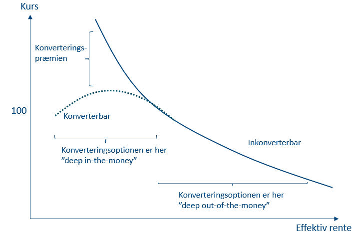
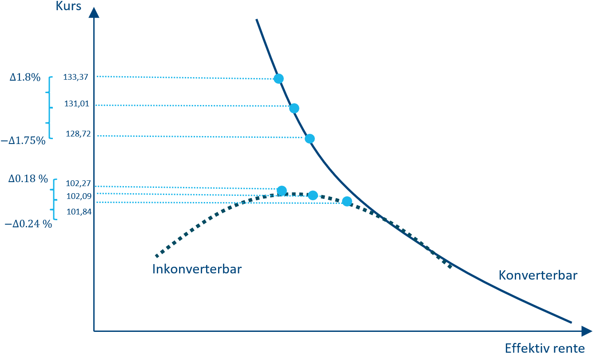
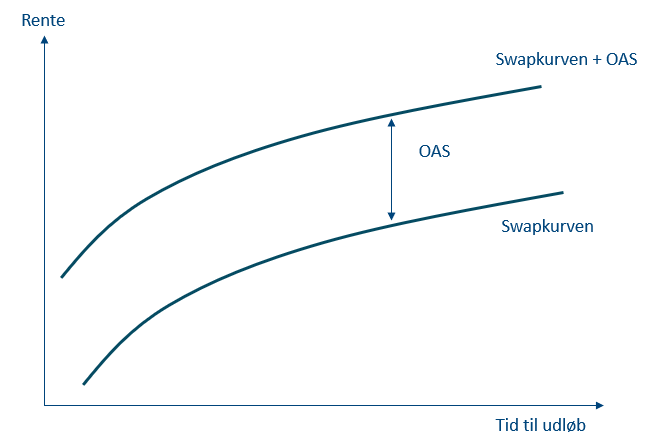
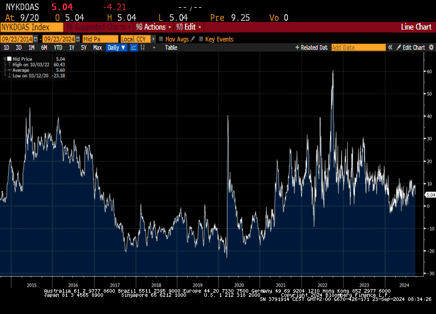

Prisfastsættelse og nøgletal på konverterbare obligationer
Kurs, konverteringspræmie, varighed/konveksitet, CPR, kurver og OAS
Niklas Lehmann Jensen
Introduktion
Formål og overblik
- Vi introducerer prisfastsættelse af konverterbare obligationer og de centrale nøgletal
- Fokus: hvordan konverteringer påvirker pris, varighed/konveksitet og risikomål
- Vi arbejder med:
- Konverteringsrisiko og markedsbestemt konverteringspræmie
- Prisdekomponering: inkonverterbar pris minus call-optionens værdi
- Optionsjusteret varighed (PVBP) via kurvestød
- CPR’s effekt over/under kurs 100
- To kurver: prisningskurven (swap) og refinansieringskurven (swap + LYS)
- OAS: konstant spænd til discountkurven for at matche markedspris
- Afslutningsvis: øvelser der binder det hele sammen
Konverteringsrisiko
Hvad er konverteringsrisiko?
- Låntager kan indfri til kurs 100 på bestemte tidspunkter
- Ved rentefald: konvertering er attraktiv → førtidig indfrielse
- For investoren (långiver) betyder det:
- Kurstab (købt > 100, indfrielse til 100)
- Geninvesteringsrisiko (genplacering til lavere rente)
- Derfor kræves en konverteringspræmie (risikopræmie) som loft for kursen
Konverterbar vs. inkonverterbar
- I praksis flader kursen på konverterbare ud omkring 100
- Men kursen kan godt være >100 (information, friktioner, skatter, varsler m.m.)
- Når inkonverterbare kurser bliver meget høje, stiger sandsynligheden for konvertering → konverterbar trækkes mod 100
Markedsbestemmelse af konverteringspræmien
Præmie som forskel i markedsværdi
- Konverteringspræmie ≈ (inkonverterbar kurs) − (konverterbar kurs) for samme karakteristika
- Eksempel (11. okt 2024):
| Obligationer | Kurs | Konverteringspræmie |
|---|---|---|
| 6% NYK E SDO 2053 | 103,07 | 41,0% |
| 6% NYK E SDO 2053 INK. | 145,35 | |
| 5% NYK E SDO 2053 | 102,09 | 29,0% |
| 5% NYK E SDO 2053 INK. | 131,74 | |
| 1% NYK E SDO 2053 | 79,91 | 6,7% |
| 1% NYK E SDO 2053 INK. | 85,25 |
* Kilde: Vitec Scanrate
- Den konverterbare er i virkeligheden dyrere for låntager (indeholder værdien af retten)
- Høj kupon ⇒ større præmie (større besparelse ved refinansiering)
Prisfastsættelse af konverterbare obligationer
Dekomponering: inkonverterbar minus call
- Betragt konverteringsretten som en call-option
- Grundrelation: \[ K_{\text{konv}} \;=\; K_{\text{inkonv}} \;-\; P_c \]
- \(K_{\text{inkonv}}\): pris på inkonverterbar CF, diskonteret på nulkuponkurve (swap)
- \(P_c\): værdi af call-optionen (kræver model for rentestruktur + konvertering)
Eksempel (5% NYK 2053, 11/10/2024)
| Størrelse | Værdi |
|---|---|
| Kurs + vedh. rente (konverterbar) | 102,09 |
| Nutidsværdi inkonverterbar + vedh. | 131,01 |
| Undervurdering i pct. | 28,33 |
| Kronevarighed (inkonverterbar del) | 15,50 |
| Kronekonveksitet (konverterbar) | -2,92 |
| Kronekonveksitet (inkonverterbar) | 2,79 |
* Kilde: Vitec Scanrate
- Optionens værdi: \[ P_c = 131{,}01 - 102{,}09 = 28{,}92 \]
Varighed og konveksitet for konverterbare
Annuitet → serieprofil via konverteringer
- Plan: annuitetslån (fast ydelse pr. termin)
- Realitet: ekstraordinære afdrag/indfrielser → CF ligner serielån
- Konvertering forkorter varigheden (mere CF tidligt)
Varighed: optionsjusteret (PVBP)
- Prisfølsomhed i kr. pr. %-point (parallelforskydning af swapkurven)
- Approksimation: \[ \text{PVBP} \;\approx\; -\frac{NV_0(+\Delta y) - NV_0(-\Delta y)}{2 \cdot \Delta y \cdot 100} \]
- 5% NYK 2053, kurvestød ±15 bp:
| Parameter | Værdi |
|---|---|
| \(\Delta y\) | 0,0015 |
| \(NV_0(+\Delta y)\) | 101,84 |
| \(NV_0(-\Delta y)\) | 102,27 |
| PVBP | 1,43 |
* Kilde: Vitec Scanrate
- Indsat i formlen: \[ \text{PVBP} \approx -\frac{101{,}84-102{,}27}{2\cdot 0{,}0015 \cdot 100} = 1{,}43 \]
- Sammenlign: inkonverterbar PVBP = 15,50 → stor forskel pga. konverteringsret
Intuition fra pris–rente-grafen
- Ved lavt renteniveau: konverteringsretten in-the-money → lav varighed (kurs begrænset mod 100)
- Ved højt renteniveau: konvertering out-of-the-money → varighed nærmer sig inkonverterbar


Kursændring m. varighed og konveksitet
- Generel tilnærmelse (kr. pr. 100 nom.): \[ \Delta P \approx \pm \Delta y \cdot \text{kronevarighed} \;+\; \tfrac{1}{2}\cdot \text{kronekonveksitet}\cdot (\Delta y)^2 \]
- Konverterbar (stød $\(15 bp):\)$ P = {; +0{,}1826,; -0{,}2483;} 27 ;; 101{,}85 $$
- Inkonverterbar: \[ \Delta P = \{\; +2{,}3572,\; -2{,}2943\;\} \Rightarrow 133{,}37 \;\text{og}\; 128{,}72 \]
| 15 bp ned | 15 bp op | |
|---|---|---|
| Inkonverterbar | 1,80% | -1,75% |
| Konverterbar | 0,18% | -0,24% |
- Inkonverterbar: højere varighed og positiv konveksitet → asymmetri til investorens fordel
- Konverterbar: ofte negativ konveksitet nær kurs 100 → gevinster ved rentefald begrænses
CPR og pris
CPR over kurs 100 (alt-andet-lige)
- 4% JYK 2056 (afdrag), 20/08/2024 — rentestruktur fast, kun CPR ændres:
| CPR | Pris | Varighed |
|---|---|---|
| 0 | 120,20 | 15,51 |
| 0,02 | 110,16 | 7,77 |
| 0,05 | 105,28 | 4,04 |
| 0,10 | 102,67 | 2,14 |
| 0,20 | 101,10 | 1,04 |
* Kilde: Vitec Scanrate
- Højere CPR ⇒ hurtigere afdrag, lavere pris og kortere varighed
CPR under kurs 100 (alt-andet-lige)
- 4% JYK 2056, rentekurven løftes +2% (kurs < 100)
- Højere CPR ⇒ hurtigere tilbagebetaling til pari + mulighed for genplacering til højere rente ⇒ pris stiger
| CPR | Pris | Varighed |
|---|---|---|
| 0 | 94,36 | 10,69 |
| 0,02 | 96,48 | 6,02 |
| 0,05 | 97,83 | 3,44 |
| 0,10 | 98,60 | 1,94 |
| 0,20 | 99,07 | 0,98 |
* Kilde: Vitec Scanrate
- I praksis: CPR stiger når renter falder (men her holdt separat for at se ceteris paribus)
To kurver: swap (prisning) og refinansiering (swap + LYS)
Idéen
- Prisningskurve (swap) bruges til at diskontere CF og prissætte obligationen
- Refinansieringskurve = prisningskurve + LYS afspejler låntagers faktiske refinansieringsomkostning \[ \text{Ref} = \text{Swap} + \text{LYS} \]
- LYS (Loan Yield Spread) afhænger bl.a. af udstedelser, likviditet, markedsforhold
Hvordan LYS påvirker konvertering
- Stigende LYS ⇒ dyrere alternativer ⇒ lavere gain ⇒ færre konverteringer \[ LYS \uparrow \;\Rightarrow\; PV_{continue} \downarrow \;\Rightarrow\; Gain \downarrow \;\Rightarrow\; \text{Prepayments} \downarrow \]
- Tre scenarier:
- Stød til prisningskurven
- Stød til refinansieringskurven (LYS)
- Stød til begge samtidig
- Stød til prisningskurven
Eksempel: stød til refinansieringskurven
- 5% NYK 2053 (11/10/2024, kurs 102,09)
- LYS +100 bp (prisningskurve uændret) ⇒ pris +2,32
| ISIN | Dato | \(\Delta\) LYS | \(\Delta\) Pris |
|---|---|---|---|
| DK0009539116 | 11-10-2024 | +100 bp | +2,32 |
- Intuition: dyrere alternativ ⇒ lavere konverteringslyst ⇒ mere sikker CF ⇒ højere pris
LYS ned og lav-kupon-case
- LYS −100 bp ⇒ konverteringslyst op ⇒ pris ned (fx −1,04 for 5% NYK 2053)
- Langt under kurs 100 (fx 1% NYK 2050 handlet 79,67, 11/10/2024): LYS-stød uden effekt
- Ingen ville konvertere alligevel → pris uændret
OAS (Option-Adjusted Spread)
Grafisk


Definition og brug
- OAS: konstant spænd til risikofri kurve i diskonteringen af forventede CF (inkl. option/CPR i modellen)
- Bruges til at matche modelpris = markedspris og fange kredit-/likviditetspræmier
- Forenklet formel: \[ PV_{\text{model}}(\text{OAS})=\sum_{t=1}^{n}\frac{CF_t}{(1+r_t+\text{OAS})^{t}} \]
- Højere OAS ⇒ højere diskonteringsrente ⇒ lavere PV (pris)
OAS-risiko (eksempel)
- DK0009539116 (5% konverterbar, NYK 2053), 17/09/2024:
| ISIN | Dato | \(\Delta\) OAS | \(\Delta\) Pris (kr.) |
|---|---|---|---|
| DK0009539116 | 17-09-2024 | +100 bp | -2,84 |
- OAS-risk: prisfølsomhed for spændskift (kredit/likviditet)
OAS over tid
Øvelser / Opgaver
Samlet problem (6% RD 2053 og 1% RD 2050)
6% RD 2053
| Størrelse | Værdi |
|---|---|
| Kurs | 103,067 |
| Pris inkonverterbar-del | 132,448 |
| Kronekonveksitet | -0,3329 |
| \(NV_0(+\Delta y)\) | 103,098 |
| \(NV_0(-\Delta y)\) | 103,028 |
| \(\Delta y\) | 0,0015 |
* Kilde: Vitec Scanrate
1% RD 2050
| Størrelse | Værdi |
|---|---|
| Kurs | 77,410 |
| Pris inkonverterbar-del | 81,866 |
| Kronekonveksitet | 0,436 |
| \(NV_0(+\Delta y)\) | 76,144 |
| \(NV_0(-\Delta y)\) | 78,687 |
| \(\Delta y\) | 0,0015 |
* Kilde: Vitec Scanrate
- Placering på pris–rente-grafen for hver: hvilket nøgletal peger på positionen?
- Kommentér kursforskellen mellem de to.
- Hvorfor er der forskel mellem markedskurs og inkonverterbar pris? Hvilken antagelse om CPR ligger implicit?
- Hvad er konverteringsretten i kurs-point for begge?
- Beregn varighed (PVBP) for begge ud fra de opgivne ±15 bp stød. Kommentér fortegnet.
- Beregn kursændringen manuelt ved ±15 bp (med varighed + konveksitet). Kommentér (hint: hvordan kan prisen stige, når renten stiger?).
- Hvilken obligation har CF mest sammenlignelig med en statsobligation? (tænk konverteringsadfærd)
Opsummering
Takeaways
- Konverterbar = inkonverterbar − call; call-værdien forklarer præmien og kursloft nær 100
- Optionsjusteret varighed er lav nær kurs 100 (rentenedslag → CF tidligere via konvertering)
- Konveksitet: ofte negativ for konverterbare nær 100 → asymmetri imod investor ved rentefald
- CPR:
- Over 100: CPR↑ ⇒ pris↓, varighed↓
- Under 100: CPR↑ ⇒ pris↑ (hurtigere tilbagebetaling til pari + genplacering højere)
- To kurver: Prisning på swap, adfærd på refinansieringskurve = swap + LYS
- OAS: konstant spænd for at matche modelpris = marked; bruges til scenarier (OAS-risk)
Finansiering — Konverterbare obligationer